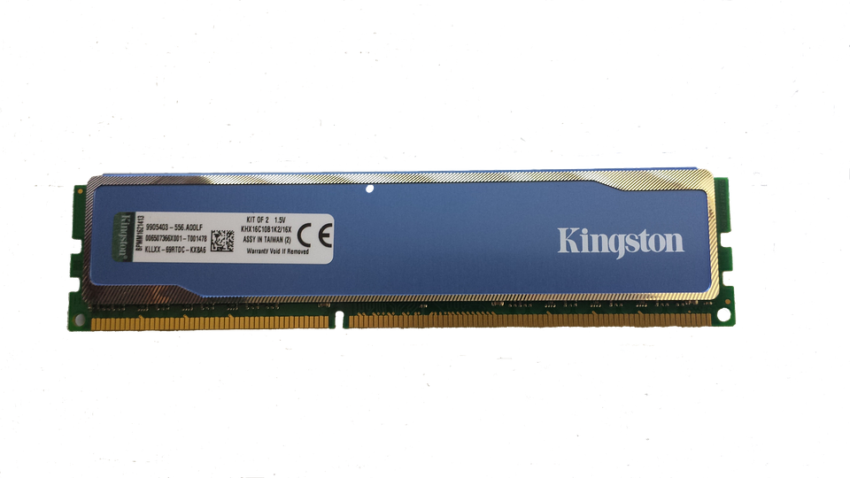

RAM
RAM-minnet skulle man kunna kalla processorns högra hand.
RAM-minnet eller internminnet är precis samma sak som en hårddisk fast betydligt snabbare.Man har ett RAM-minnet eftersom det är betydligt snabbare än vad en hårddisk är vilket gör att datorns beräkningar blir betydligt snabbare än om processorn bara hade haft hårddisken som "högra hand".
Ett RAM-minne fungerar dock lite annorlunda till skillnad från en hårddisk. Hårddisken lagrar program medans RAM-minnet lagrar bakgrunds datan till programmet som är öppet. RAM-minnet är alltså det snabba minnet medans hårddisken är det långsamma minnet. Det märks tydligt genom att RAM-minnet bara 4-16 GB medans hårddisken brukar vara på 250GB-500GB.
En märkvärd skillnad är att RAM-minnet brukar vara runt 4-8 GB i en vanlig dator medans i en speldator brukar man ha minst 16 GB ända upp till iallafall 32GB. Det är för att man ska kunna köra flera olika program samtidigt och laggfritt.
Innan du köper är det viktigt att tänka på följande:
Om du tänker använda datorn till vardagen och inte spela t.ex så räcker det med 4-8 GB RAM-minne.Tänker du ha många program uppe och även spela sattsa då på 16-32 GB RAM-minne. 